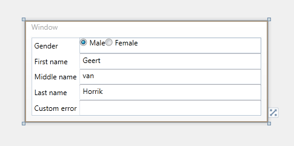

Lots of developers are using designers such as the built-in designer in Visual Studio or Expression Blend to design their xaml based applications. Although you should use designers with lots of care, we strive to fully support all designers.
Since Catel 1.3, it is possible to create design-time versions of a view model. This way, you can preview the UserControl or DataWindow implementations using example data.
To create design-time support for a data window, use the following steps:
1. Create a design time view model. Normally, this can easily be achieved by deriving a new class from the actual view-model and inject the model. Below is an example of a design time version of a person view model:
/// <summary>
/// Design time version of the <see cref="PersonViewModel"/>.
/// </summary>
public class DesignPersonViewModel : PersonViewModel
{
/// <summary>
/// Initializes a new instance of the <see cref="DesignPersonViewModel"/> class.
/// </summary>
public DesignPersonViewModel()
: base(new Person { FirstName = "Geert", MiddleName = "van", LastName = "Horrik", Gender = Gender.Male })
{
}
}
2. Define the type of the design time view model.
d:DataContext="{d:DesignInstance ViewModels:DesignPersonViewModel}"
If you want it to actually show demo data (instead of allowing to configure bindings), use IsDesignTimeCreatable:
d:DataContext="{d:DesignInstance ViewModels:DesignPersonViewModel, IsDesignTimeCreatable=True}"
Full DataWindow declaration:
<catel:DataWindow x:Class="Catel.Examples.PersonApplication.UI.Windows.PersonWindow"
xmlns="http://schemas.microsoft.com/winfx/2006/xaml/presentation"
xmlns:x="http://schemas.microsoft.com/winfx/2006/xaml"
xmlns:d="http://schemas.microsoft.com/expression/blend/2008"
xmlns:mc="http://schemas.openxmlformats.org/markup-compatibility/2006"
xmlns:catel="http://schemas.catelproject.com"
xmlns:ViewModels="clr-namespace:Catel.Examples.PersonApplication.ViewModels"
xmlns:Converters="clr-namespace:Catel.Examples.PersonApplication.Data.Converters"
xmlns:Models="clr-namespace:Catel.Examples.Models;assembly=Catel.Examples.Models"
mc:Ignorable="d"
d:DataContext="{d:DesignInstance ViewModels:DesignPersonViewModel, IsDesignTimeCreatable=True}">
- Example of design time data support:
